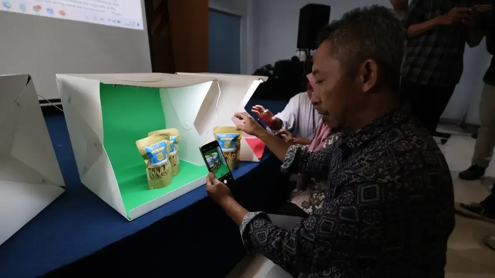

Press Release & Publikasi Media
Publikasikan kegiatan, prestasi, dan pencapaian institusi Anda di media cetak dan digital Jawa Pos Radar Kediri — terverifikasi Dewan Pers, menjangkau jutaan pembaca, dan menjadikan anggaran branding Anda lebih akuntabel dan efektif.

Tingkatkan Reputasi Institusi Anda Lewat Media Terpercaya
Jawa Pos Radar Kediri adalah media cetak dan digital paling berpengaruh di Kediri Raya dengan jutaan pembaca setia. Dengan mempublikasikan kegiatan Anda di sini, institusi Anda mendapatkan eksposur yang luas, kredibilitas yang tinggi, dan anggaran branding yang dapat dipertanggungjawabkan secara hukum karena kami berbadan hukum dan terverifikasi Dewan Pers.



Detail Layanan
- Kategori Press Release & Media Branding
- Platform Koran, Portal Web & Medsos
- Klien Sekolah, Pemerintahan, Korporasi
- Jangkauan Kediri Raya & Jawa Timur
- Tim Redaktur & Wartawan Senior JPRK
- Legalitas Berbadan Hukum & Dewan Pers
- Penerbitan Harian (Cetak & Online)
Tentang Layanan Ini
Layanan Press Release & Publikasi dari Radar Kediri Institute memberikan akses langsung ke ekosistem media Jawa Pos Radar Kediri — koran harian terbesar dan paling berpengaruh di Kediri Raya yang telah terverifikasi Dewan Pers. Melalui layanan ini, setiap kegiatan, prestasi, dan momen penting institusi Anda akan diliput secara profesional oleh jurnalis berpengalaman dan ditampilkan di hadapan jutaan pembaca setia.
Berbeda dengan sekadar pasang iklan, publikasi melalui jalur berita di Jawa Pos Radar Kediri memberikan nilai kepercayaan yang jauh lebih tinggi di mata masyarakat. Anggaran yang Anda keluarkan pun lebih akuntabel karena kami berbadan hukum resmi — menjadikan setiap pengeluaran untuk branding institusi dapat dipertanggungjawabkan secara administratif dan hukum.
Jenis Layanan Publikasi
Liputan & Berita Koran Cetak
Kegiatan institusi Anda diliput langsung oleh jurnalis Jawa Pos Radar Kediri dan diterbitkan di koran cetak harian yang didistribusikan ke seluruh wilayah Kediri, Nganjuk, Tulungagung, dan sekitarnya — menjangkau ratusan ribu pembaca setiap hari.
Publikasi Portal Berita Digital
Berita kegiatan institusi Anda diterbitkan di radarkediri.jawapos.com — portal berita digital terpercaya dengan jutaan pembaca online. Konten digital terindeks Google secara permanen dan dapat ditemukan kapan saja oleh calon stakeholder Anda.
Konten Media Sosial Resmi
Kegiatan Anda dipublikasikan melalui akun media sosial resmi Radar Kediri di Instagram, Facebook, YouTube, dan TikTok yang memiliki ratusan ribu pengikut aktif — memberikan eksposur digital yang masif dan viral.
Liputan Video & Feature Khusus
Paket liputan video profesional untuk menampilkan kegiatan atau profil institusi Anda dalam format konten video yang menarik — cocok untuk diterbitkan di YouTube Radar Kediri TV dan media sosial dengan format Reels atau Short.
Paket Branding Institusi Terpadu
Paket lengkap yang menggabungkan publikasi koran cetak, portal digital, dan media sosial dalam satu program branding terpadu. Dirancang untuk sekolah, madrasah, instansi pemerintah, dan perusahaan yang ingin membangun reputasi secara konsisten dan berkelanjutan.
Contoh Hasil Publikasi
Sebagian contoh liputan kegiatan institusi yang telah berhasil dipublikasikan di platform media Jawa Pos Radar Kediri